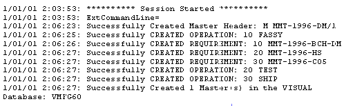

After you import data into your VISUAL database you can review the import session in the Vmdlsync.log file that the VISUAL Data Import Utility creates as it imports the data. You can find this file in the directory where your executables are installed.
Here is a section of a typical log file. This log file details the importation and creation of a master header.
